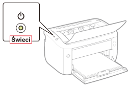
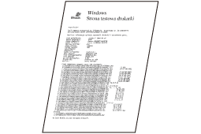
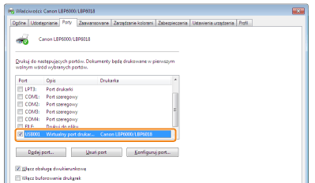
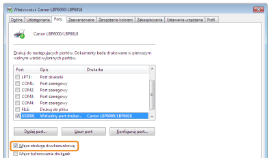

Jeżeli nie można drukować, gdy drukarka jest podłączona do komputera kablem USB, należy zbadać problem w oparciu o poniższe pytanie.
<Pytanie 1> Czy drukarka jest włączona? (Czy wskaźnik zasilania świeci?)

|
Włączona
|
Do <Pytanie 2>
|
|
Wyłączona
|
Włącz drukarkę.
|
|
Nie można włączyć
|
<Pytanie 2> Czy wskaźnik papieru  miga?
miga?
miga?
|
Miga
|
Załaduj prawidłowo papier, a następnie naciśnij przycisk ładowania papieru [
 ]. ]. |
|
Nie miga
|
Do <Pytanie 3>
|
<Pytanie 3> Czy kabel USB jest podłączony prawidłowo?

|
Podłączony
|
Spróbuj następującego rozwiązania.
Jeśli wykorzystywany jest koncentrator, podłącz drukarkę bezpośrednio do komputera.
Jeśli wykorzystywany jest długi kabel USB, wymień go na kabel krótki.
Jeśli dostępny jest inny kabel USB, użyj go.
 Jeśli drukowanie nie jest wykonywane, przejdź do <Pytanie 4>. |
|
Odłączony
|
Podłącz kabel prawidłowo.
|
<Pytanie 4> Czy można wydrukować stronę testową w systemie Windows?

|
Można wydrukować
|
Nie ma problemu z drukarką i sterownikiem.
Sprawdź preferencje drukowania w aplikacji.
|
|
Nie można wydrukować
|
Do <Pytanie 5>
|
<Pytanie 5> Czy prawidłowo wybrano używany port?

|
Wybrano
|
Do <Pytanie 6>
|
|
Nie wybrano
|
Wybierz prawidłowy port.
|
|
Nie można znaleźć portu, który ma być używany.
|
Ponownie zainstaluj sterownik drukarki.
|
<Pytanie 6> Czy włączono komunikację dwukierunkową?

|
Włączono
|
Do <Pytanie 7>
|
|
Nie włączono
|
Włącz komunikację dwukierunkową i uruchom ponownie komputer i drukarkę.
|
<Pytanie 7> Spróbuj zastosować poniższe rozwiązania.
Wyłącz istniejące programy zawierające oprogramowanie zabezpieczające.
Jeśli inne urządzenia są podłączone przez port USB do komputera, odłącz te, które nie są używane.
Jeśli na komputerze zainstalowane są sterowniki lub oprogramowanie innych urządzeń (połączenie USB), odinstaluj te, które nie są używane.
Podłącz kabel USB do innego portu USB komputera.
Podłącz drukarkę do innego komputera przy użyciu kabla USB.
Jeśli w dalszym ciągu nie można drukować, przejdź do <Pytanie 8>.
<Pytanie 8> Ponownie zainstaluj sterownik drukarki.
Jeśli w dalszym ciągu nie można drukować, przejdź do <Pytanie 9>.
<Pytanie 9> Odinstaluj sterownik klasy USB, a następnie ponownie zainstaluj sterownik drukarki.
Jeśli w dalszym ciągu nie można drukować, skontaktuj się z lokalnym, autoryzowanym przedstawicielem firmy Canon.